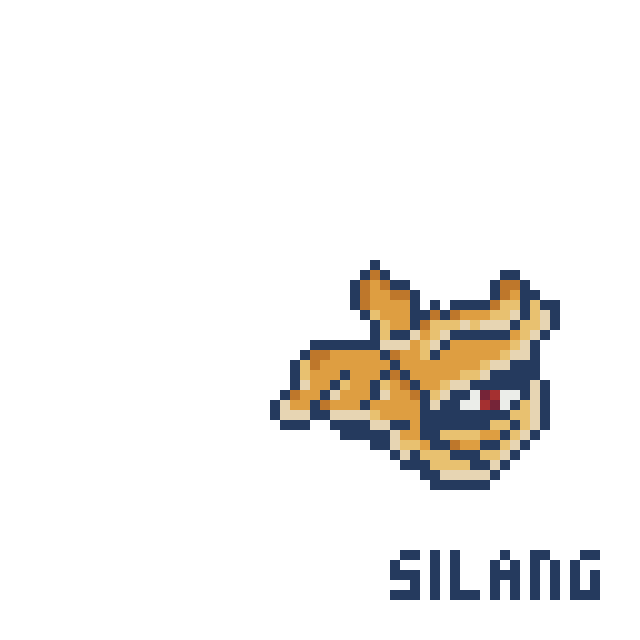

Bato ng Pagsilang - Ang Bantay ni Bathala
Ang Bato ng Pagsilang ay pinagmulan ng unang hininga ng sangkatauhan. Sa batong ito ibinuhos ni Bathala ang kanyang kapangyarihan upang likhain ang buhay, ngunit nang siya’y malason ng kasakiman, ginamit niya ito upang ikulong ang mga alaala ng tao. Ang batong ito’y naglalabas ng gintong liwanag na tila apoy ng kulog, at sinumang humawak nito nang walang basbas ng diyos ay maaaring madurog ng bigat ng kanyang nilikha.
Ang Taga Protekta
Matatagpuan sa

